Graaf een kuil
Door op verschillende plekken in de bodem te kijken zie je dat de bodem iedere keer weer anders is. Leer op deze wijze ook waarom dat zo is. Door vaker te graven wordt bodembeoordeling steeds interessanter en bodembeheer steeds beter.
Een eenvoudige bodembeoordeling
Een eenvoudige bodembeoordeling waarmee de bodem snel een cijfer van 0 tot 10 gegeven kan worden.
Om bodems te vergelijken of om meer inzicht te krijgen in tekortkomingen van bodems kunnen een aantal belangrijke eigenschappen gekwantificeerd worden. Hiertoe zijn meerdere systemen ontwikkeld. Een snelle eenvoudige methode is de SSQR-methode (Smart Soil Quality Rating). De bodem krijgt een cijfer tussen 0 en 10:
Beoordeeld worden:
structuurelementen, regenwormen en beworteling.
1. Structuurelementen
Percentage scherpblokkige structuurelementen in de laag 0-25 cm
- 0 punten: meer dan 50% is scherpblokkig
- 2 punten: 25-50% is scherpblokkig
- 4 punten: minder dan 25% is scherpblokkig
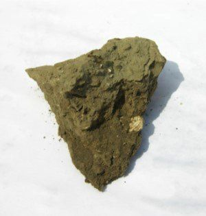
Een scherpblokkig element is hoekig en er groeien geen wortels in
2. Regenwormen
Aantal regenwormen in een kluit van 20 x 20 x 20 cm
- 0 punten: 0
- 1 punt: 1
- 2 punten: 2
- 3 punten: 3 of meer
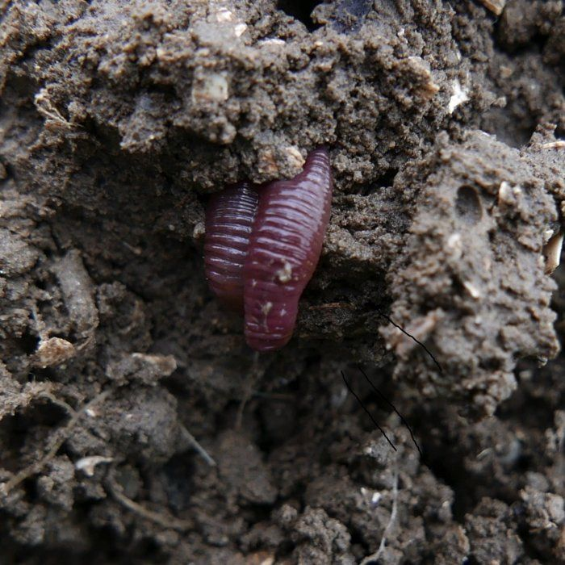
Het tellen van wormen gaat het beste na een periode waarin de bodem langere tijd voldoende vochtig is. Bijvoorbeeld een natte periode in de zomer of in de herfst.
3. Beworteling
Maximale diepte van de beworteling
0 punten: 0 wortels per 100 cm2 op 40 cm diepte1 punt: 1wortel per 100 cm2 op 40 cm diepte2 punten: 2 wortels per 100 cm2 op 40 cm diepte3 punten: 3 of meer wortels per 100 cm2 op 40 cm diepte
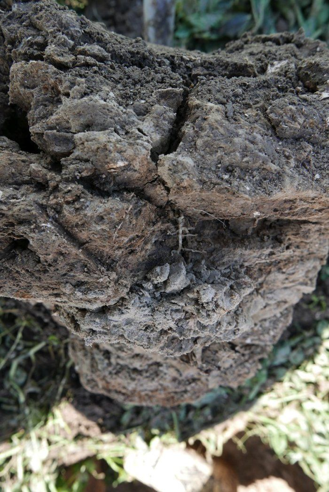
Veel bodems zijn na 25 cm diepte door verdichting slecht doorwortelbaar. Voor de vochtvoorziening en de voorziening van voedingststoffen is een diepere beworteling van belang.
Tel de scores bij elkaar op
totaal 0 punten: zeer slechte bodemkwaliteit
totaal 10 punten: zeer goede bodemkwaliteit
Meer over de visuele beoordeling van de bodemstructuur
Voorzichtig de grond open breken. Wat is er dan te zien?
Voor de plant is het van belang dat er voldoende vocht en lucht in de bodem zit en dat voedingsstoffen goed bereikbaar zijn. De bodemstructuur speelt hierbij een belangrijke rol. Bij een verdichte grond blijft de groei van de gewassen al snel achter. Wanneer dit alleen plaatselijk is, valt het op. Wanneer het gehele perceel geen optimale structuur heeft, valt dit vaak minder op. Een structuurbepaling kan dan meer duidelijkheid geven. Om de bodemstructuur te beoordelen is een visuele beoordeling het beste. U heeft hier alleen een spade en een mes voor nodig. In het volgende wordt aangegeven hoe ieder dit zelf kan doen.
De structuurelementen
Belangrijke structuurelementen in de grond zijn (zie ook de foto’s onderaan deze pagina):
1. Kruimels.
Dit zijn losse kruimels van 0,3 tot 1 cm groot. Wortels kunnen gemakkelijk in deze kruimels en tussen deze kruimels doorgroeien.
2. Afgerond blokkige structuurelementen.
Dit zijn blokjes grond van wisselende grootte, van 1 tot wel 10 cm groot. De zijkanten zijn niet vlak, de hoeken zijn rond. Bij doorbreken heeft het breukvlak vaak een andere glans of kleur dan de buitenkant. Bij een enigszins ruwe behandeling kunnen ze vaak makkelijk in kruimels overgaan. Let er goed op of dit in de grond ook zo was of dat het werkelijk grotere elementen zijn.
3. Scherpblokkige structuurelementen.
Deze zijn hoekig en compact. De wanden zijn glad.
Het is mogelijk de gewichts- of volumeverdeling van de verschillende soorten structuurelementen in te schatten. Verschillende percelen kunnen dan vergeleken worden.
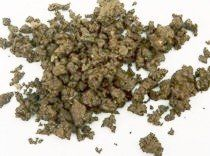
Voor plantengroei is dit de mooiste structuur
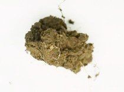
Deze structuurelementen zijn wat meer afgerond en niet hoekig. Er zijn veel porien. Wortels kunnen er makkelijk doorheen. Bij licht erop drukken worden het vaak kruimels en zijn dan minder goed te onderscheiden van de kruimelige structuurelementen.
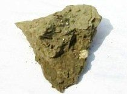
De kluiten zijn hoekig en er kunnen in het algemeen geen wortels in doordringen. Soms zitter er wel wortels in. Dat is bijvoorbeeld het geval wanneer jonge planten in losgemaakte grond zijn geplant en de wortels eerst in de grond kunnen doordringen maar later zakt de grond volledig in tot een scherpblokkige structuur.
Het verkrijgen van een kluit op een spade
Om de bodemstructuur te beoordelen is het nodig om een ongestoorde kluit van de laag 0-25 cm diepte en van de laag 25-50 cm diepte vrij te krijgen. Dit kan met een normale spade gebeuren. Wel moet zo gewerkt worden dat de te beoordelen grond niet verstoord wordt.
Om een ongestoorde kluit te krijgen wordt eerst een kleine kuil gegraven. Zonder de grond te verstoren wordt een te beoordelen kluit, dikte ca 10 cm, aan alle kanten vrijgemaakt en zorgvuldig naar boven gehaald. Bij het naar boven halen moet de kluit goed ondersteund worden. Een plankje tegen de voorkant kan op sommige grondsoorten goed helpen. De foto’s hieronder laten dit zien.
De kluit wordt uit de grond gehaald en bij voorkeur op een verhoging voor verdere beoordeling gelegd.
Wanneer er op de kluit een plant staat kan ook de beworteling beoordeeld worden.
Bekijk ook onderstaande animatie hieronder, klik op de foto.
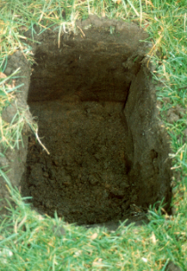
-1920w.jpg)
kluitbeoordeling bij een bodem. Bodemkwaliteit
Meer over de visuele beoordeling van het bodemleven
Kijk naar regenwormen. Het bodemleven is zeer divers en het grootste deel zo klein dat het niet te zien is. Regenwormen zijn duidelijk te zien en geven een goede indicatie over de bodemkwaliteit.In de bodem zijn er 3 groepen regenwormen te onderscheiden. Dit onderscheid is van belang, omdat de invloed van de worm op de bodem per groep varieert.
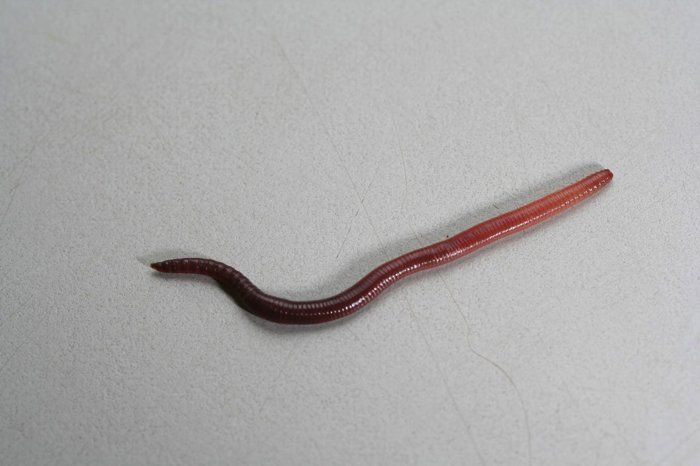
Groep 1: Strooiselbewoners
De bovenkant is rood en de onderkant grauw. Ze leven vooral in de strooisellaag en komen ook aan de oppervlakte om plantenresten te verzamelen.
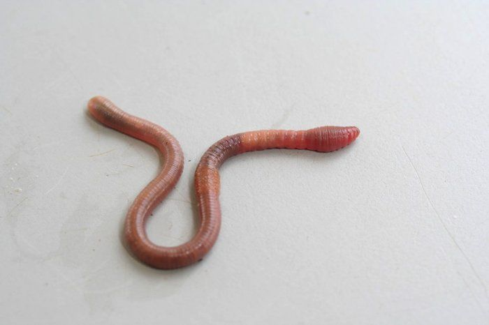
Groep 2: Bodembewoners
Deze wormen hebben aan bovenzijde en onderzijde eenzelfde grauwe kleur. Ze eten ook grond en zijn belangrijk voor de bodemstructuur en de binding van humus aan kleideeltjes.
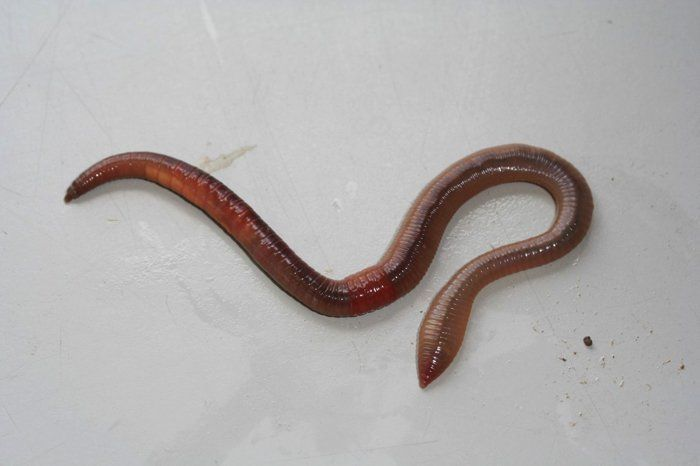
Groep 3: Pendelaars
Ook deze wormen zijn aan de bovenkant rood en aan de onderkant grauw. Ze zijn groot en de belangrijkste soort: lumbricus terrestris, heeft een platte staart (afbeelding).
Deze wormen leven hun hele leven in eenzelfde verticale gang. Die gang kan dan dienen als afvoer van overtollig regenwater, aanvoer van lucht en op de wanden van de gang ontwikkelt zich een actief bodemleven.
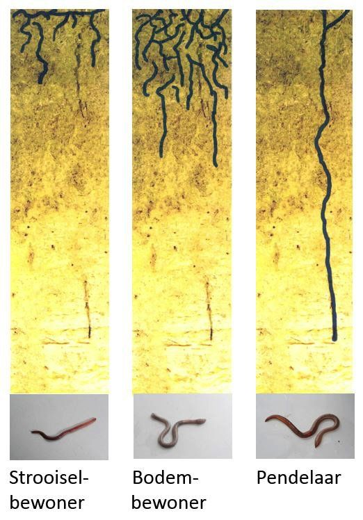
Meer over de visuele beoordeling van de beworteling
BewortelingWat vindt de plant van de bodem? Voor een antwoord op deze vraag kijk onder meer naar de beworteling.
De wortels van de planten zeggen veel over de bodem.
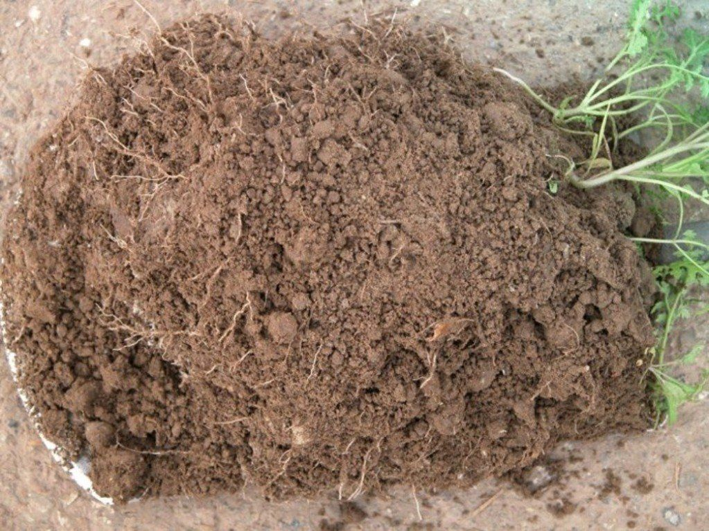
Veel wortels en veel kleine wortels geven aan dat er goede bewortelingsmogelijkheden zijn:
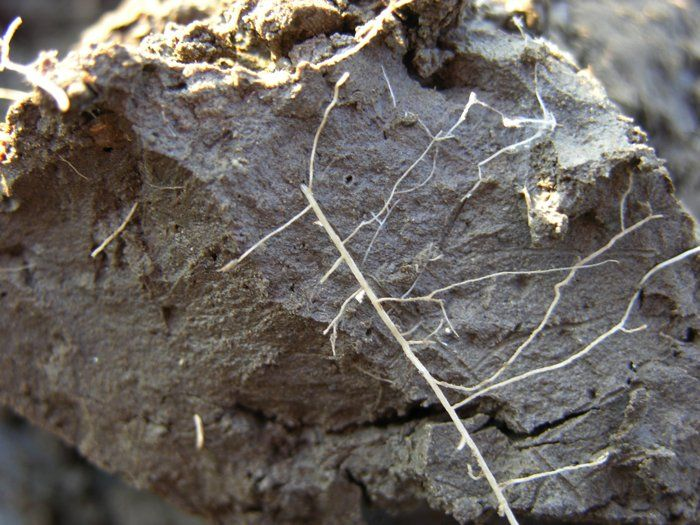
Weinig wortels die vaak dik en kronkelig zijn met hier en daar een zijwortel die ook weer kronkelig is geeft aan dat er structuurproblemen zijn.
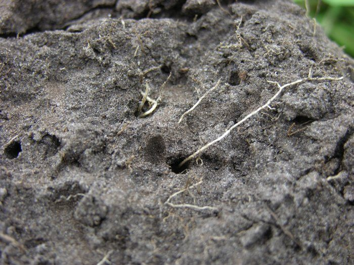
Wortels zijn te tellen. Op een horizontaal vlak op een oppervlak van 10x10 cm is een mogelijkheid. Dieptes van 20 en 40 cm zijn belangrijk.
Diverse methoden van visuele bodembeoordeling
Methoden voor visuele bodembeoordeling
Er zijn eenvoudige en uitgebreide methoden om de bodem te bekijken. Alle hebben gemeen dat de bodem zelf meegenomen kan worden in de beslissingen rond bodembheer en dat is al heel belangrijk.
Beknopte snelle score methode, SSQR
De SSQR (Smart Soil Quality Rating) is een eenvoudige en snelle methode die de belangrijkste bodemproblemen in kaart brengt. Beoordeeld worden het deel scherpblokkige structuurelementen (0-4 punten), het aantal regenwormen (0-3) punten en het aantal wortels op 40 cm diepte (0-3 punten). Op deze wijze wordt een score van minimaal 0 en maximaal 10 punten verkregen. De methode is vooral nuttig wanneer een eenvoudige beoordeling van belang is. Zie hierboven.
2. Bodemscan Louis Bolk Instituut
De bodemscan van het Louis Bolk Instituut is een interessante methode. Interessant omdat deze scan vanuit de Nederlandse situatie is ontwikkeld en nauw gekoppeld is aan wenselijke cultuurmaatregelen die direct passen bij de bedrijven waar het om gaat. Beoordeeld worden:
-beworteling, 0-25 cm, 25-50 cm, > 50 cm-bodemstructuur, % scherpblokkig 0-25, 25-50 en > 50 cm-storende laag, diepte en dikte van een eventuele storende laag
De scan is tot nu toe alleen ontwikkeld voor akkerbouw op zandgronden. http://www.louisbolk.org/downloads/2986.pdf Naast de beoordelingsmethode worden maatregelen aangegeven rond waterhuishouding, keuze van hoofdgrondbewerking en inzet van groenbemesters.
Deze scan is een voorbeeld van een degelijk onderbouwde werkwijze. Het zou goed zijn wanneer van meerdere bodems en meerdere bedrijfssystemen dergelijke scans gemaakt werden.
3. Bodemconditiescore
Is de bodemscan vanuit de bedrijven en in Nederland ontwikkeld, de bodemconditiescore is in Nieuw-Zeeland ontwikkeld en moet nog aan de Nederlandse situatie aangepast worden. Daar wordt nu hard aan gewerkt en mogelijk groeien de verschillende benaderingswijzen (SSQR, Bodemscan LBI) naar elkaar toe omdat de uitgangsprincipes veel overeenkomst vertonen.
De bodemconditiescore is ontwikkeld door Graham Shepherd in Nieuw Zeeland. De methode wordt nu in veel landen toegepast en is onder meer onder auspiciën van de FAO verder ontwikkeld.
De methode wordt nu in Nederland door verschillende instanties ontwikkeld (Louis Bolk Instituut, SKB, WUR en Aequator), vooral bij grasland ( www.mijnbodemconditie.nl ). Er wordt een promotieonderzoek naar de methode uitgevoerd. (M. van Leeuwen).
Een belangrijk voordeel van de Bodemconditiescore is dat deze internationaal al langere tijd is toegepast. De objectiviteit en toepasbaarheid is in veel teelten nu bekend. De methode heeft ook nadelen en die zullen bij het huidige uittesten waarschijnlijk naar voren komen, waardoor aanpassing mogelijk is. De methode bestaat uit een beoordeling van:
- gewasbedekking-beworteling-Verdichting 10-40 cm-regenwormen-bodemstructuur-zuurgraad (pH)
- organische stof (kleur)
- aantal gekleurde vlekken
De belangrijke bodemeigenschappen zijn er in opgenomen, maar een nadeel is dat zuurgraad en organische stof niet in het veld beoordeeld kunnen worden en de score dus niet in het veld afgerond kan worden. Verder is de bedekking een moeilijk thema. Die wisselt door het jaar of is altijd 100% (gras). Beworteling en bodemstructuur worden heel algemeen beoordeeld en passen nog niet bij een specifieke vorm van bodemgebruik. Dit laatste is bij de Bodemscan al wel het geval.
Literatuur
Er is de laatste jaren veel werk gedaan aan objectivering van de methode. Vindt hier recente wetenschappelijke literatuur.
Leeuwen, M. van e.a. Visual soil evaluation: reproducibility and correlation with standard measurements. Soil Tillage and research vol. 178, may 2018. p 167-178. https://www.sciencedirect.com/science/article/pii/S0167198717302131?via%3Dihub
Ball, B.C., Batey, T., Munkholm, L.J., 2007. Field assessment of soil structural quality –a development of the Peerlkamp test. Soil Use Manag. 23, 329–337. http://dx.doi.org/ 10.1111/j.1473-2743.2007.00102.x.
Ball, B.C., Batey, T., Munkholm, L.J., Guimarães, R.M.L., Boizard, H., McKenzie, D.C., Peigné, J., Tormena, C.A., Hargreaves, P., 2015. The numeric visual evaluation of subsoil structure (SubVESS) under agricultural production. Soil Tillage Res. 148, 85–96. http://dx.doi.org/10.1016/j.still.2014.12.005.
Ball, B.C., Guimarães, R.M.L., Cloy, J.M., Hargreaves, P.R., Shepherd, T.G., McKenzie, B.M., 2017. Visual soil evaluation: a summary of some applications and potential developments for agriculture. Soil Tillage Res. 173, 114–124. http://dx.doi.org/10. 1016/j.still.2016.07.006.
Emmet-Booth, J.P., Forristal, P.D., Fenton, O., Ball, B.C., Holden, N.M., 2016. A review of visual soil evaluation techniques for soil structure. Soil Use Manag. 32, 623–634.http://dx.doi.org/10.1111/sum.12300.
Gugino, B.K., Idowu, O.J., Schindelbeck, R.R., Van Es, H.M., Wolfe, D.W., Moebius-Clune, B.N., Thies, J.E., Abawi, G.S., 2009. Cornell Soil Health Assessment Training Manual, Edition 2.0. Cornell University, Geneva, NY.
Guimarães, R.M.L., Ball, B.C., Tormena, C.A., 2011. Improvements in the visual evaluation of soil structure. Soil Use Manag. 27, 395–403. http://dx.doi.org/10.1111/j. 1475-2743.2011.00354.x.
Guimarães, R.M.L., Ball, B.C., Tormena, C.A., Giarola, N.F.B., da Silva, Á.P., 2013. Relating visual evaluation of soil structure to other physical properties in soils of contrasting texture andmanagement. Soil Tillage Res. 127, 92–99. http://dx.doi.org/ 10.1016/j.still.2012.01.020.
Guimarães, R.M.L., Lamandé, M., Munkholm, L.J., Ball, B.C., Keller, T., 2017. Opportunities and future directions for visual soil evaluation methods in soil structure research. Soil Tillage Res. 173, 104–113. http://dx.doi.org/10.1016/j.still.2017. 01.016.
Johannes, A., Weisskopf, P., Schulin, R., Boivin, P., 2017. To what extent do physical measurements match with visual evaluation of soil structure? Soil Tillage Res. 173, 24–32. http://dx.doi.org/10.1016/j.still.2016.06.001.
McGarry, D., 2004. A Methodology of a Visual Soil – Field Assessment Tool – to Support, Enhance and Contribute to the LADA Program. FAO, Rome.
McKenzie, D.C., 2013. Visual soil examination techniques as part of a soil appraisal framework for farm evaluation in Australia. Soil Tillage Res. 127, 26–33. http://dx.doi. org/10.1016/j.still.2012.05.004.
Mueller,L.,Kay,B.D.,Hu,C.,Li,Y.,Schindler,U.,Behrendt,A.,Shepherd,T.G.,Ball,B.C., 2009. Visual assessment of soil structure: evaluation of methodologies on sites in Canada, China and Germany. Part I: Comparing visual methods and linking them with soil physical data and grain yield of cereals. Soil Tillage Res. 103, 178–187. http://dx.doi.org/10.1016/j.still.2008.12.015.
Newell-Price, J.P., Whittingham, M.J., Chambers, B.J., Peel, S., 2013. Visual soil evaluation in relation to measured soil physical properties in a survey of grassland soil compactioninEnglandandWales.SoilTillageRes.127,65–73.http://dx.doi.org/10. 1016/j.still.2012.03.003.